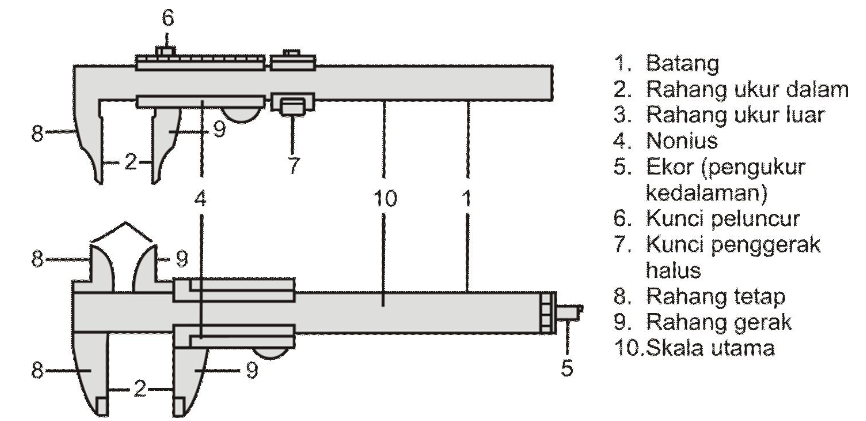
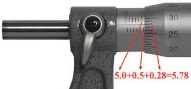

Cara Menggunakan Jangka Sorong
Agar pemakaian jangka sorong berjalan baik dan tidak menimbulkan kemungkinan-kemungkinan yang dapat menyebabkan cepat rusaknya jangka sorong maka ada beberapa hal yang harus diperhatikan, yaitu :
- Gerakan rahang ukur gerak (jalan) harus dapat meluncur kelincinan (gesekan) tertentu sesuai denga standar yang diizinkan dan jalannya rahang ukur harus tidak bergoyang.
- Sebaiknya jangan mengukur benda ukur dengan hanya bagian ujung dari kedua rahang ukur tetapi sedapat mungkin harus masuk agak kedalam.
- Harus dipastikan bahwa posisi nol dari skala ukur dan kesejajaran muka rahang ukur betul-betul tepat.
- Waktu melakukan penekanan kedua rahang ukur pada benda ukur harus diperhatikan gaya penekannya. Terlalu kuat menekan kedua rahang ukur akan menyebabkan kebengkokan atau ketidaksejajaran rahang ukur. Disamping itu, bila benda ukur mudah berubah bentuk maka terlalu kuat menekan rahang ukur dapat menimbulkan penyimpangan hasil pengukuran.
- Sebaiknya jangan membaca skala ukur pada waktu jangka sorong masih berada pada benda ukur. Kunci dulu peluncurnya lalu dilepas dari benda ukur kemudian baru dibaca skala ukurnya dengan posisi pembacaan yang betul.
- Jangan lupa, setelah jangka sorong tidak digunakan lagi dan akan disimpan ditempatnya, kebersihan jangka sorong harus dijaga dengan cara membersihkannya memakai alat-alat pembersih yang telah disediakan misalnya kertas tissue, vaselin, dan sebagainya.
Cara Membaca Jangka Sorong
Perhatikan hasil pengukuran diatas. Cara membaca jangka sorong untuk melihat hasil pengukurannya hanya dibutuhkan dua langkah pembacaan:
- Membaca skala utama: Lihat gambar diatas, 21 mm atau 2,1 cm (garis merah) merupakan angka yang paling dekat dengan garis nol pada skala vernier persis di sebelah kanannya. Jadi, skala utama yang terukur adalah 21mm atau 2,1 cm.
- Membaca skala vernier (nonius): Lihat gambar diatas dengan seksama, terdapat satu garis skala utama yang yang tepat bertemu dengan satu garis pada skala vernier. Pada gambar diatas, garis lurus tersebut merupakan angka 3 pada skala vernier. Jadi, skala vernier yang terukur adalah 0,3 mm atau 0,03 cm.
Cara Menggunakan Mikrometer Sekrup
Mikrometer adalah alat ukur yang presisi. Oleh karena itu, dalam menggunakannya harus dengan metode yang betul dan dengan cara yang hati-hati. Dengan demikian, keselamatan alat ukur dan kesalahan pengukuran dapat dikontrol. Untuk itu ada beberapa hal yang harus diperhatikan bila akan melakukan pengukuran dengan menggunakan mikrometer. Hal-hal tersebut antara lain yaitu :
- Permukaan bidang ukur dari benda ukur harus betul-betul bersih sehingga tidak ada kotoran yang dapat merusakkan sensor alat ukur dan kemungkinan terjadinya kesalahan pengukuran adalah kecil.
- Sebelum melakukan pengukuran harus dipastikan terlebih dahulu apakah posisi nol dari skala ukur sudah tepat. Kalau belum harus dilakukan penyetelan lebih dulu dengan menggunakan kunci penyetel.
- Bila tersedia alat pemegang mikrometer maka sebaiknya mikrometer diletakkan pada alat pemegang tersebut sedemikian rupa sehingga posisinya memudahkan untuk melakukan pengukuran. Bila tidak tersedia alat pemegang mikrometer maka sebaiknya benda kerja dipegang dengan tangan kiri dan mikrometer dengan tangan kanan. Aturlah posisinya sedemikian rupa sehingga skala ukurnya dapat dilihat dan dibaca dengan mudah.
- Penekanan poros ukur terhadap muka bidang ukur harus diperhatikan betul-betul, tidak terlalu keras dan tidak terlalu lunak. Terlalu keras menekan poros ukur akan cepat merusakkan ulir utama dan adanya kemungkinan untuk terjadinya perubahan bentuk benda ukur sehingga menimbulkan kesalahan pengukuran. Terlalu lunak menekan poros ukur juga akan menimbulkan kesalahan pengukuran karena kemungkinan tidak menyentuhnya sensor pada bidang ukur dapat terjadi. Oleh karena itu, untuk memastikan tekanan poros ukur yang cukup dapat digunakan alat pembantu pemutar silinder putar yaitu gigi gelincir (rachet). Penekanan poros ukur pada benda ukur dapat diatur dengan gigi gelincir ini begitu muka poros ukur menempel pada muka bidang ukur.
Cara Membaca Mikrometer Sekrup

Setelah memahami cara menggunakannya, kini Anda bisa mempelajari cara membaca mikrometer sekrup dengan mudah. Ketika melakukannya, jangan lupa memperhatikan dua bagian yaitu skala utama dan nonius, Hasil pada skala utama bisa dilihat di sleeve sedangkan skala nonius bisa dilihat pada thimble. Untuk lebih jelasnya, simak langkah-langkahnya di bawah ini.
- Perhatikan letak garis skala di bagian atas sleeve yaitu 5mm.
- Lihat garis skala di bagian bawah yaitu: 0,5 mm.
- Kemudian, lihat nilai skala di skala nonius bagian thimble yatu 28 mm.
- Kalikan nilai pada nonius dengan cara 28 x 0,01 mm + 0,28 mm.
- Jumlahkan hasil ketiga pengukuran tersebut : 5 mm + 0,5 mm + 0,28 mm = 5,78 mm.
Jadi, hasil akhir pengukuran yang didapat adalah 5,78 mm.